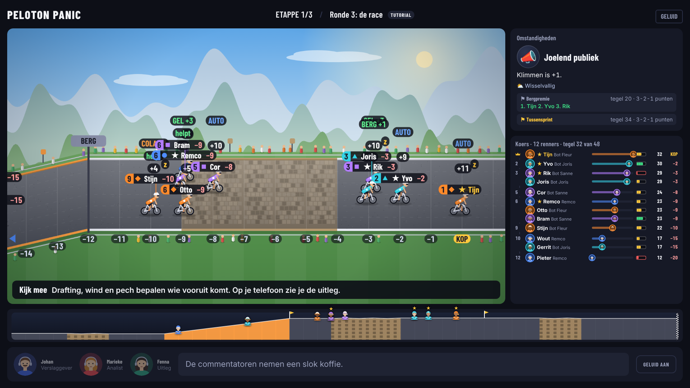
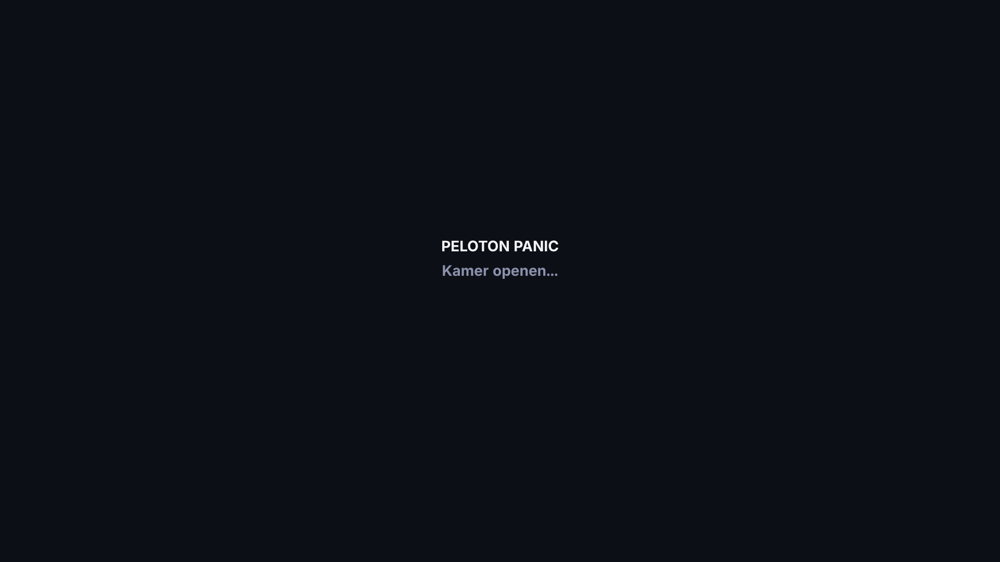
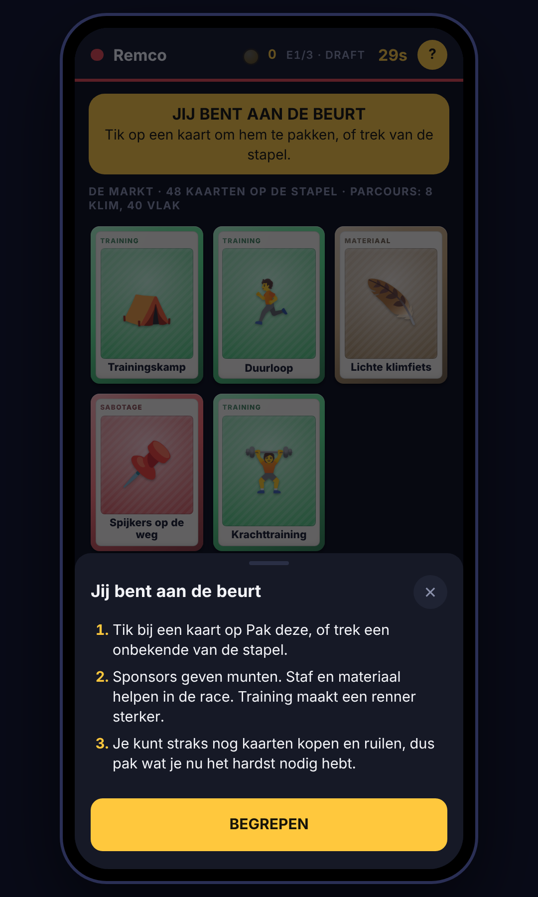
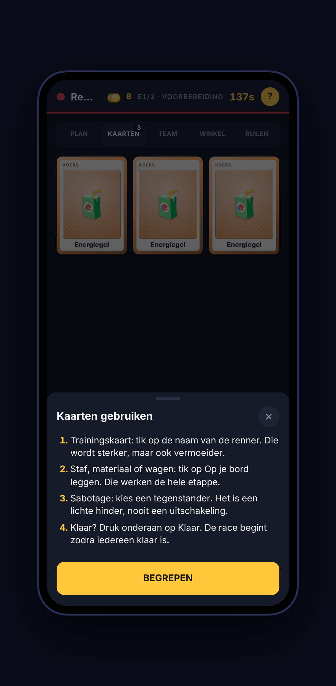
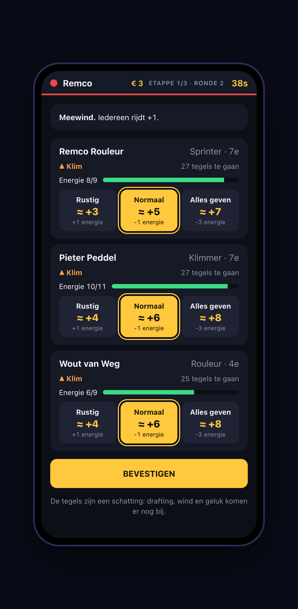
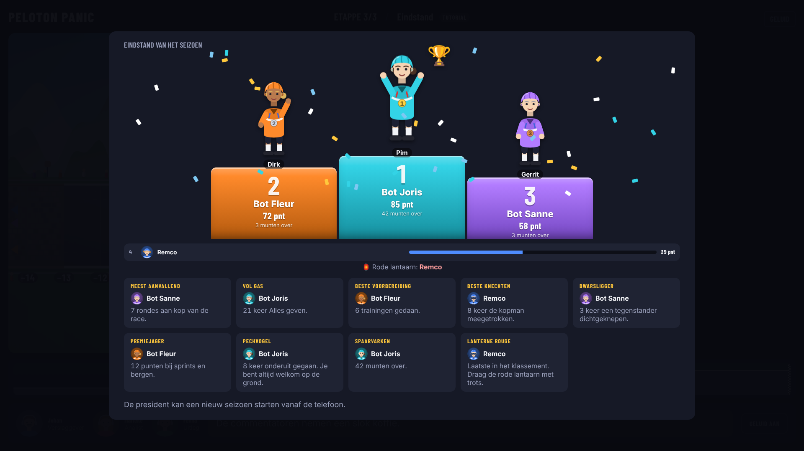

Wie krijgt de rode lantaarn?
Een bankhangspel waarbij de tv het speelbord is en jullie telefoons je hand. Je managet een ploeg van drie renners door een seizoen van drie etappes.

Hoe een etappe werkt
Kaarten kiezen, renners trainen, spullen inkopen en dan een simpele race waarin jouw voorbereiding het verschil maakt.
-
Draft
Op de tv ligt een markt van 5 kaarten. Om de beurt pak je er een, of een onbekende van de stapel. Het team onderaan het klassement begint.
-
Voorbereiding
Train je renners, leg spullen op je bord, koop kaarten met munten, ruil met anderen of saboteer iemand (licht).
-
Race
Elke ronde kies je per renner Rustig, Normaal of Alles geven. Drafting, wind en pech doen de rest.
-
Uitslag
Punten voor de top zes (de slotetappe telt dubbel), munten, bonuskaarten voor het podium en een troostkaart voor de rode lantaarn.
De tv is het bord
De markt, de teams en het klassement staan groot in beeld. Twee commentatoren, Johan en Marieke, vertellen in het Nederlands wat er gebeurt en wie er aan de beurt is.

Je telefoon is je hand
Scan de QR-code op de tv en je zit erin. Op je telefoon kies je kaarten, train je en bepaal je het tempo van je renners. Niemand ziet wat jij in handen hebt.



Train, maar niet te veel
Training maakt een renner sterker, maar vervaagt na elke etappe met 1 per eigenschap. Elke training kost vermoeidheid. Is die te hoog, dan ben je overtraind en word je juist zwakker. Een rustdag of fysiotherapeut helpt.

Spullen
Zes soorten kaarten. Sabotage is altijd een lichte hinder, nooit uitschakeling.
| Training | Duurloop, Krachttraining, Klimstage, Hoogtestage, Trainingskamp, Rustdag |
|---|---|
| Sponsor | Bakkerij, Regiobank, Energiedrank (munten per etappe) |
| Staf | Mecanicien, Soigneur, Ploegleider, Voedingsdeskundige, Fysio |
| Materiaal | Reservefiets, Aero-wielen, Lichte klimfiets |
| Wagen | Volgauto, Teambus |
| Sabotage | Spijkers op de weg, Verwisselde bidons |
Uitslag en eindstand
Na elke etappe punten, munten en bonussen. Aan het eind van het seizoen deelt het spel prijzen uit: meest aanvallend, vol gas, beste voorbereiding, spaarvarken en natuurlijk de lanterne rouge.

Tutorial-modus
De president zet de tutorial aan in de lobby. Er is geen apart spel: iedereen speelt gewoon mee, tegen elkaar of tegen bots.
Uitlegkaart per fase
Boven elk scherm staat uitleg die past bij wat je nu doet. Met Begrepen klap je hem dicht.
Instructiekaart
Zegt wat er nu van de spelers wordt verwacht.
Uitleg in korte blokken
Elk onderwerp één keer: draft, voorbereiding, training, ruilen, tempo, drafting en uitslag.
Zelf spelen
Peloton Panic draait op een eigen server op je computer. Telefoons verbinden via wifi.
git clone https://github.com/remco59/peloton-panic.git
cd peloton-panic
npm install
npm run setup:tts # optioneel: commentatorstemmen via edge-tts
npm run dev- Open
http://localhost:3000op de computer of tv. - Scan de QR-code met je telefoon. Telefoons moeten op hetzelfde wifi zitten.
- De eerste speler die meedoet is de president en start het seizoen.